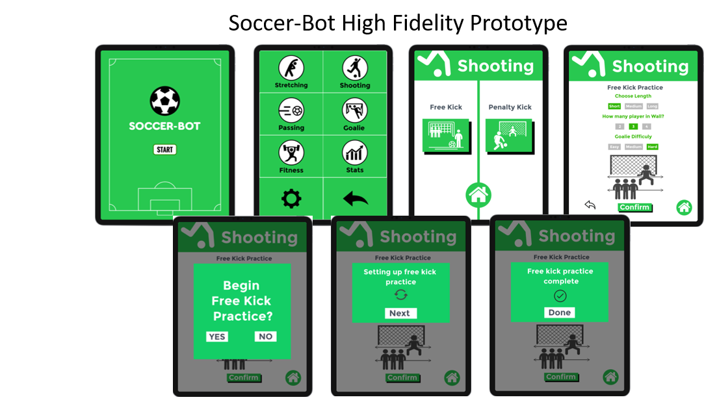
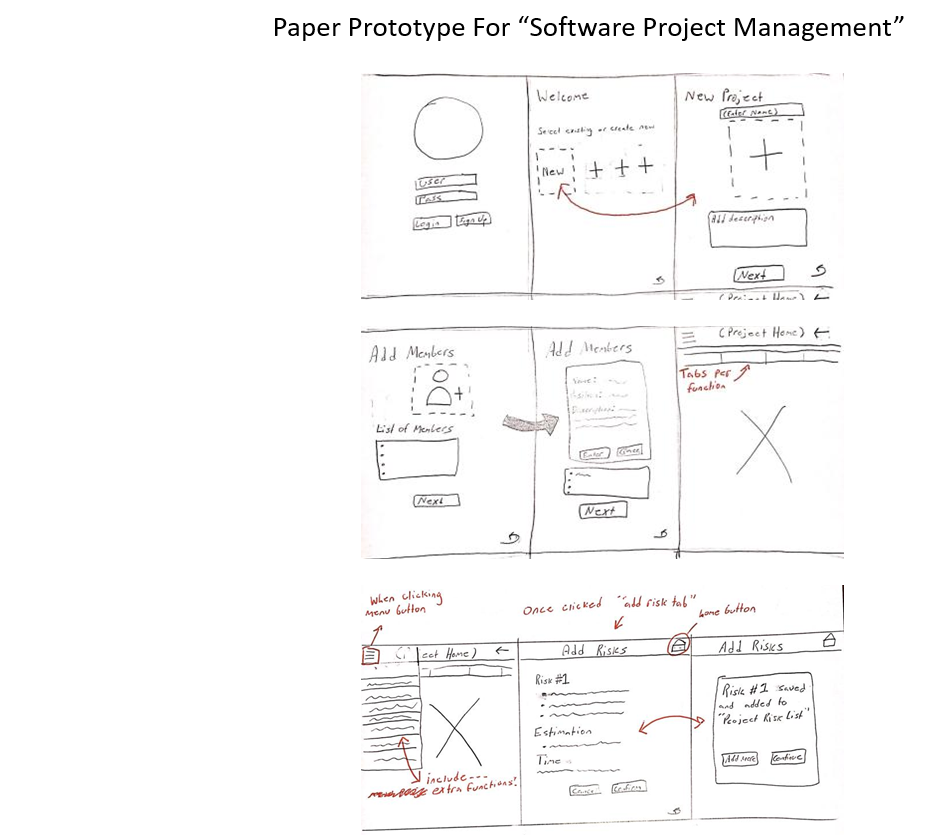
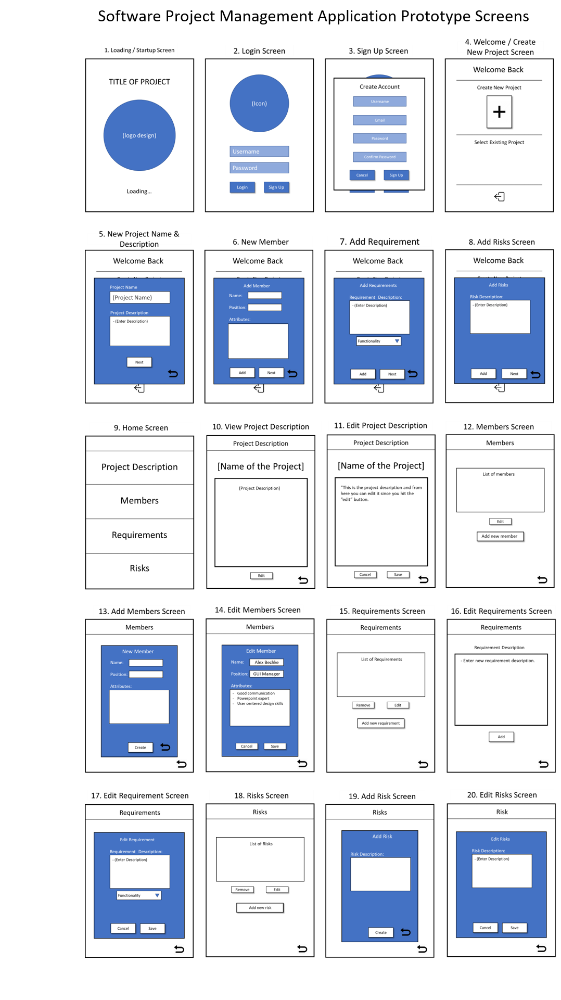
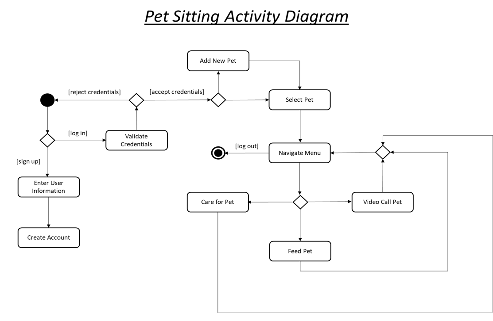
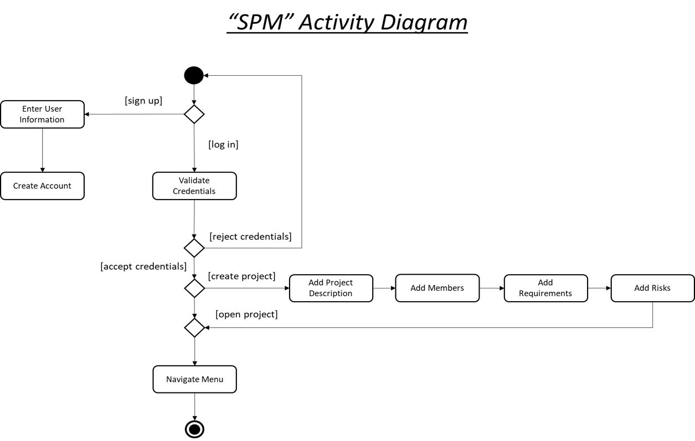
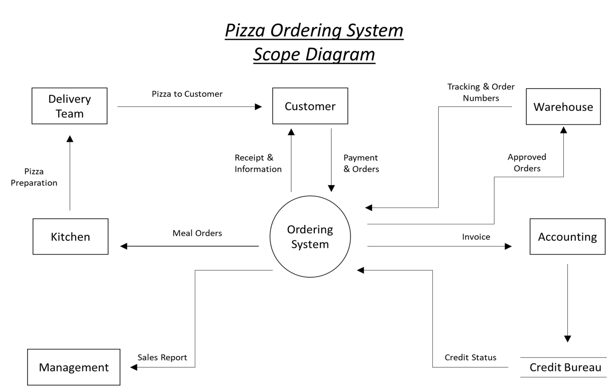
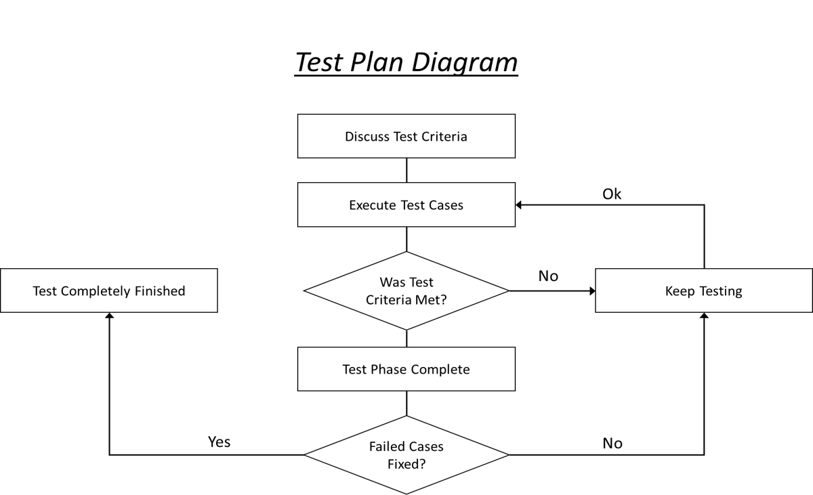

UI/UX
This prototype was created in my "User Center Design" course at KSU. I had a partner who played the role as a client in which I had to build a high fidelity prototype for the application they wanted built. This prototype is functional to an extent and you can find at this link (https://marvelapp.com/prototype/4behgad).
This paper prototype was created for the first deliverable for my "Software Project Management" class. The course was essentially a semester long project and the main role I played on my team was to be in charge of the GUI and wireframes. Becuase this paper prototype was only for the first deliverable it only serves about half of what the final project came to be.
UML Examples
While given the task to create a mobile application for a client who was in need of a pet sitting app, I took oppertunity to create an activity diagram for so.  An activity diagram created in my "Software Project Management" course. This diagram shows the steps of how the app is going to function. This of course was done before I created the wireframes for this project and it made the job of completing the task a lot easier. 
A scope diagram designated for a pizza delivery system created in my "Intro to Software Engineering" course. 
A test plan diagram I created for a project where I practiced software quality assurance skills.
Senior Project
(Coming Spring 2021...)